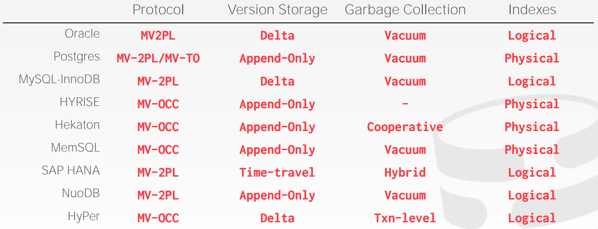

多版本并发控制
DBMS 在数据库内部维护单个逻辑对象的多个物理版本。
- 当一个事务写入一个对象时，DBMS 创建这个对象的新版本。
- 当事务读取一个对象时，读取事务开始后的最新的存在版本。
最初1978年 MIT 博士论文。
写不会阻塞读。
读不会阻塞写。
仅读取的事务可以读取到一致性快照，不需要获取锁。
使用时间戳决定可见性。
很容易支持查询 “时光机” 。
MVCC 设计考虑
- 并发控制协议
- 版本存储
- 垃圾回收
- 索引管理
并发控制协议
- 时间戳顺序，给事务分配时间戳来决定序列顺序。
- 乐观并发控制，三阶段协议，使用私有空间保存新版本
- 两阶段锁：读取/写入逻辑元组之前事务获取物理版本合适的锁。
版本存储
DBMS 使用元组的指针字段创建每个逻辑元组的版本链。
- 允许 DBMS 对一个特定事务在运行时找到一可见的版本。
- 索引总是指向链的头部。
不同的存储模式确认在哪里存储每个版本的什么信息。
- Append-only 存储，新的版本追加到相同的表空间。
- 时光机存储：旧的版本被拷贝到其它表空间。
- Delta 存储：原始数据修改的属性被拷贝到其它增量记录空间。
垃圾回收
DBMS 随着时间的推移需要移除可回收的物理版本。
- 没有活跃的事务能够看到那个版本。（SI）
- 版本被一个中止事务创建。
两个额外的设计考虑点：
- 如何查找过期的版本？
- 如何决定什么时候可以安回收内存？
方法1：元组级别。通过直接检查元组找到老的版本。后台回收 vs. 合作回收。
方法2：事务级别。事务跟踪老的版本，这样 DBMS 不需要扫描元组决定可见性。
MVCC 实现
